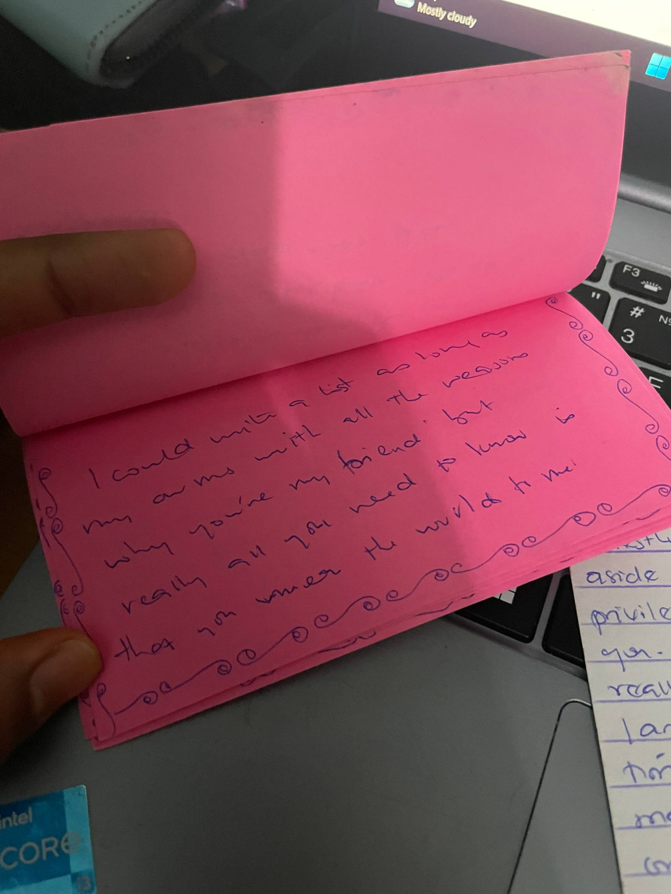
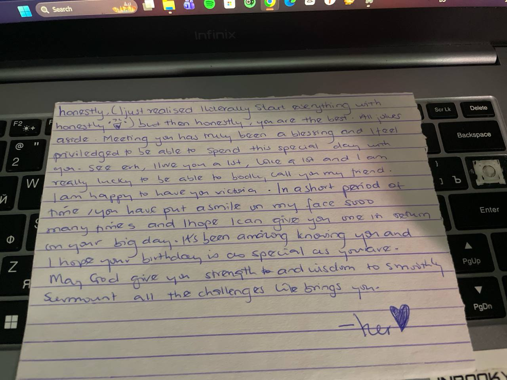
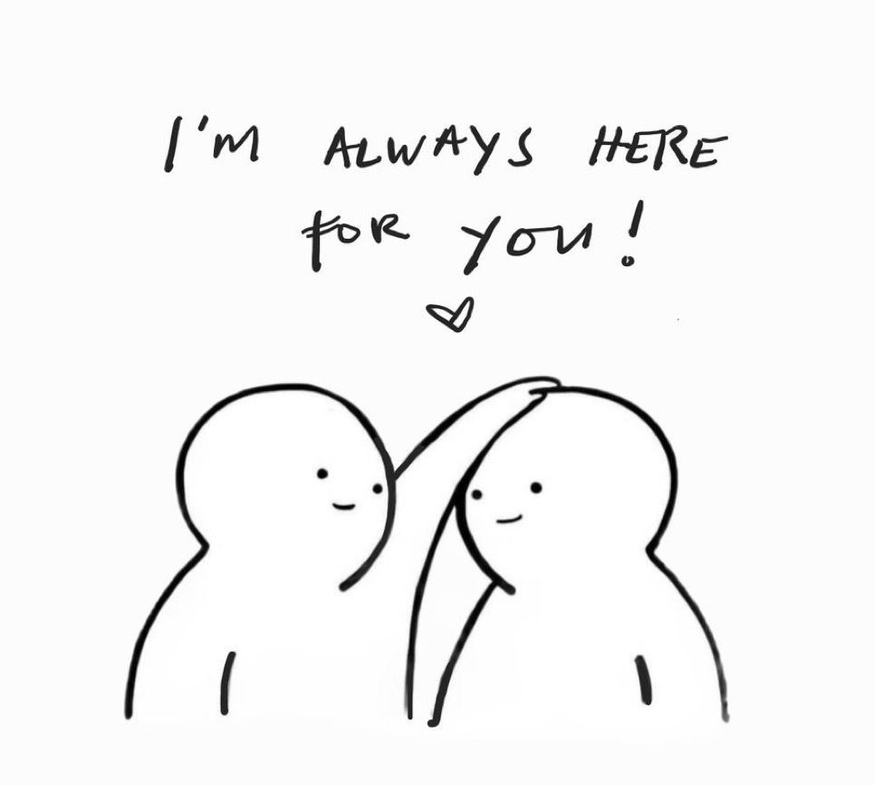
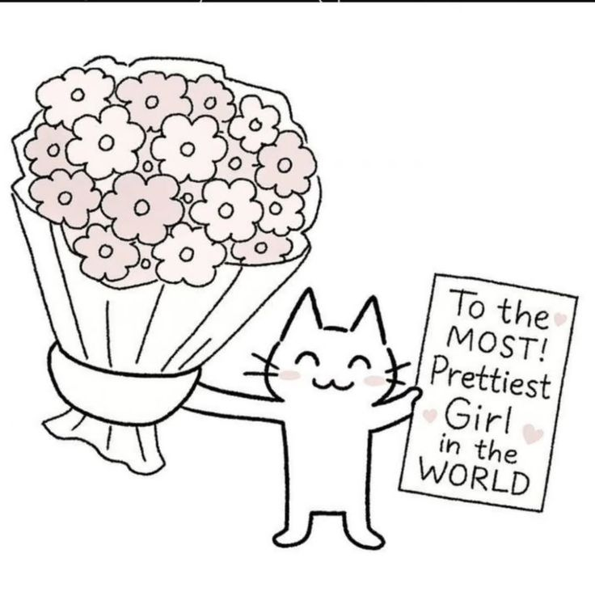
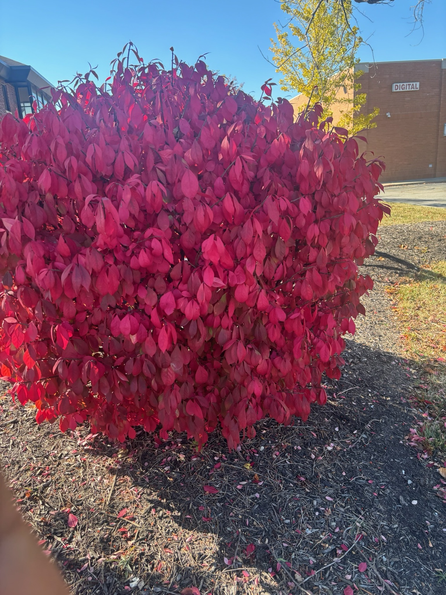
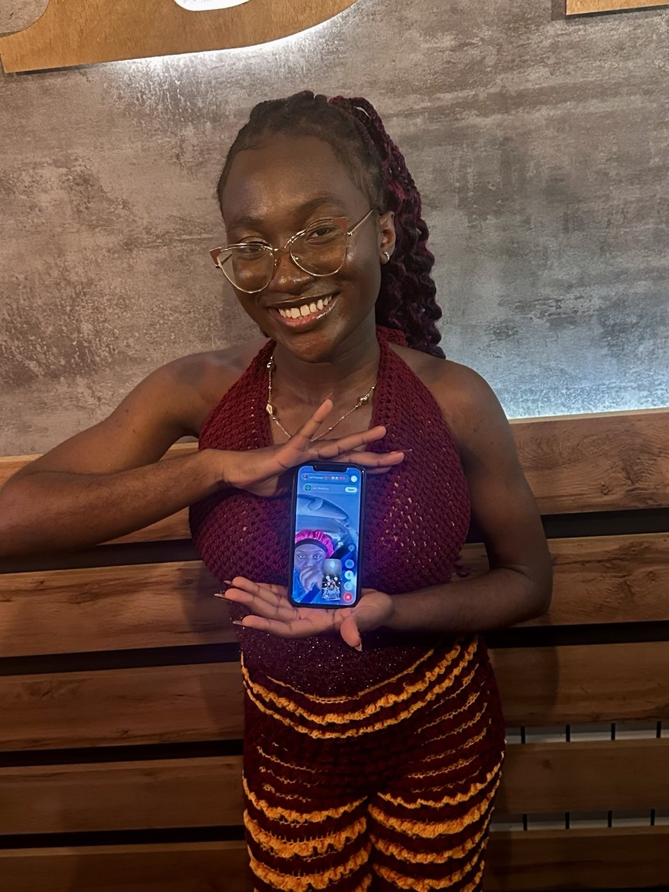

psst… this is for you
A LITTLE NOTE FOR MY PERSON
Our story,
my favorite story.
I made you a little something.
Come open it with me?
psst… this is for you
A LITTLE NOTE FOR MY PERSON
I made you a little something.
Come open it with me?
Made with love, for my favorite girl
the cover of our little world
OUR STORY · SINCE 2020
A friendship made of letters, laughter,
growing up, and finding our way back.
A journey book made for you
the beginning · 2020
Our story began in senior high in 2020. These photos are from graduation in 2021 — a little glimpse of the early days we got to share.

Every story has a beginning. This one was ours.
01 · The beginning
little things i kept
We sent each other letters. We had our ups and downs. Sometimes we fought. Sometimes we made up. Somewhere in all of that, we built a history only we know.
And then there was my 18th birthday. You made it special, and that memory is one of the pages I want to keep.


02 · Our early chapters
a page from the in-between
After graduation, we stopped talking like before. Life moved forward, and there was a long quiet stretch between us.
But we still remembered each other on our birthdays. A message, a wish, a small reminder that the other person was still somewhere in our lives.


Quiet didn’t have to mean forgotten.
03 · The quiet chapter
October 2025
We shared old letters again. We revisited words written by younger versions of ourselves. And then you said you missed us.
“I miss us.”The words that opened the door again.
So we decided to reconnect. There were fears we might drift apart again, but we gave this friendship another chance.


04 · The return
October 2025 → October 2026
We were in different countries, living different lives. Still, you kept showing me that being far away doesn’t mean being absent.
little moments, kept forever
Tap a cloud. Each one holds a little piece of us.
Memory 1
Some moments are small, but they stay with us.
05 · One year later
A little look at us
Some memories belong to the girls we once were; others are still unfolding for the women we're becoming. Open them one by one. ♡
06 · Little things I want you to know
A friendship that keeps growing
We're growing up in different places, building our own lives, and learning new things about ourselves along the way.
07 · Across the distance
The next chapter
Our friendship bucket list. Check things off as they happen.
08 · Things still to come
2020 · 2025 · 2026
Whatever comes next,
I’m grateful we found our way back.
09 · End of this chapter, not the story
one last little note ♡
I love you always and forever. ♡
A little memory
![Memory photograph]()
A little moving memory, just for you ♡